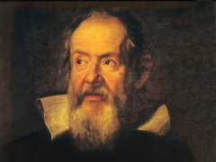
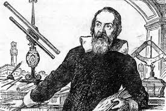

Астрономы -> Галилео Галилей
Галилео Галилей
"До сих пор еще не решено, и я думаю, что человеческая наука никогда не решит, конечна ли Вселенная или бесконечна?"

Имя этого человека вызывало одновременно восхищение и ненависть у его современников. Тем не менее он вошел в историю мировой науки не только как последователь Джордано Бруно, но и как один из крупнейших ученых итальянского Возрождения.
Он родился 15 февраля 1564 года в городе Пизе в знатной, но обедневшей семье Его отец Винченцо Галилей был талантливым музыкантом и композитором, но искусство не давало средств к существованию, и отец будущего ученого прирабатывал торговлей сукном
До одиннадцати лет Галилей жил в Пизе и учился в обычной школе, а затем вместе с семьей переехал во Флоренцию. Здесь он продолжил образование в монастыре бенедиктинцев, где изучал грамматику, арифметику, риторику и другие предметы.
В семнадцать лет Галилей поступил в Пизанский университет и стал готовиться к профессии врача. Одновременно из любознательности он читал труды по математике и механике, в частности, Евклида и Архимеда. Последнего позже Галилей всегда называл своим учителем.
Из-за стесненного материального положения юноше пришлось бросить Пизанский университет и вернуться во Флоренцию. Дома Галилей самостоятельно занялся углубленным изучением математики и физики, которые его очень заинтересовали В 1586 году он написал свою первую научную работу «Маленькие гидростатические весы», которая принесла ему некоторую известность и позволила познакомиться с несколькими учеными. По протекции одного из них — автора «Учебника механики» Гвидо Убальдо дель Монте Галилей в 1589 году получил кафедру математики в Пизанском университете. В двадцать пять лет он стал профессором там, где учился, но не завершил свое образование.
В работе «О движении» (1590) Галилей подверг критике аристотелевское учение о падении тел. В ней, между прочим, он писал: «Если разум и опыт в чем-нибудь совпадают, для меня не играет роли то, что это противоречит мнению большинства».
Падуанский период — самый плодотворный и счастливый в жизни Галилея. Здесь он обрел семью, связав свою судьбу с Мариной Гамба, которая родила ему двух дочерей: Вирджинию (1600) и Ливию (1601); позже родился сын Винченцо (1606).
С 1606 года Галилей занимается астрономией. В марте 1610 года увидел свет его труд под названием «Звездный вестник». Вряд ли когда-либо в одном произведении сообщалось столько сенсационных астрономических сведений, сделанных к тому же буквально в течение нескольких ночных наблюдений в январе — феврале того же 1610 года.
Огромная белая полоса на небе — Млечный Путь — при рассмотрении в зрительную трубу отчетливо разделилась на отдельные звезды. Возле Юпитера ученый заметил маленькие звездочки (сначала три, затем еще одну), которые уже на следующую ночь изменили свое положение относительно планеты. Галилею с его кинематическим восприятием явлений природы не нужно было долго раздумывать — перед ним спутники Юпитера! — еще один довод против исключительного положения Земли. Галилей открыл существование четырех спутников Юпитера. Позже Галилеи обнаружил феномен Сатурна (хотя и не понял, в чем дело) и открыл фазы Венеры.
Наблюдая, как солнечные пятна перемещаются по солнечной поверхности, он установил, что Солнце тоже вращается вокруг своей оси. На основании наблюдений Галилей сделал вывод, что вращение вокруг оси свойственно всем небесным телам.
Наблюдая звездное небо, он убедился, что число звезд гораздо больше, чем можно увидеть простым глазом. Так Галилей подтвердил мысль Джордано Бруно о том, что просторы Вселенной бесконечны и неисчерпаемы. После этого Галилей сделал вывод о том, что гелиоцентрическая система мира, предложенная Коперником, является единственно верной.
Телескопические открытия Галилея были многими встречены с недоверием, даже с враждебностью, но сторонники коперниканского учения, и прежде всего Кеплер, тут же опубликовавший «Разговор со звездным вестником», отнеслись к ним с восторгом, видя в этом подтверждение правоты своих убеждений.
«Звездный вестник» принес ученому европейскую славу. Тосканский герцог Козимо II Медичи предложил Галилею занять должность придворного математика. Она сулила безбедное существование, свободное время для занятий наукой, и ученый принял предложение. Кроме того, это позволяло Галилею вернуться на родину, во Флоренцию.
Теперь, имея могущественного покровителя в лице великого герцога Тосканского, Галилей все смелее и смелее начинает пропагандировать учение Коперника Клерикальные круги встревожены. Авторитет Галилея как ученого высок, к его мнению прислушиваются. Значит, решат многие, учение о движении Земли — не просто одна из гипотез устройства мира, которая упрощает астрономические расчеты.
Беспокойство служителей церкви по поводу триумфального распространения учения Коперника хорошо поясняет письмо кардинала Роберто Беллармино одному из своих корреспондентов: «Когда утверждают, что в предположении, будто Земля движется и Солнце стоит неподвижно, все наблюдаемые явления объясняются лучше, чем при... геоцентрической системе Птолемея, то это прекрасно сказано и не заключает в себе никакой опасности; а этого и достаточно для математики; но когда начинают говорить, что Солнце в действительности стоит в центре мира и что оно только вращается вокруг себя, но не движется с востока на запад, и что Земля находится на третьем небе и с большой скоростью вращается вокруг Солнца, то это вещь очень опасная и не только потому, что она раздражает всех философов и ученых богословов, но и потому, что она вредит св. вере, поскольку из нее вытекает ложность Св. Писания».
В Рим посыпались доносы на Галилея. В 1616 году по просьбе Конгрегации святого индекса (церковного учреждения, ведающего вопросами разрешений и запрещений) одиннадцать видных богословов рассмотрели учение Коперника и пришли к выводу о его ложности. На основе этого заключения гелиоцентрическое учение было объявлено еретическим, а книга Коперника «Об обращении небесных сфер» внесена в индекс запрещенных книг. Одновременно запрещались все книги, поддерживавшие эту теорию, — существовавшие и те, которые будут написаны в будущем.
Галилея вызвали из Флоренции в Рим и в мягкой, но категорической форме потребовали прекратить пропаганду еретических представлений об устройстве мира. Увещевание проводил все тот же кардинал Беллармино. Галилей был вынужден подчиниться. Он не забыл, чем кончилось для Джордано Бруно упорство в «ереси». Кроме того, как философ он знал, что «ересь» сегодня становится истиной завтра.

В 1623 году под именем Урбана VIII папой становится друг Галилея кардинал Маффео Барберини. Ученый спешит в Рим. Он надеется добиться отмены запрещения «гипотезы» Коперника, но тщетно. Папа объясняет Галилею, что сейчас, когда католический мир раздирается ересью, недопустимо ставить под сомнение истинность святой веры.
Галилей возвращается во Флоренцию и продолжает работать над новой книгой, не теряя надежды когда-нибудь опубликовать свой труд. В 1628 году он еще раз посещает Рим, чтобы разведать обстановку и выяснить отношение высших иерархов церкви к учению Коперника. В Риме он встречает ту же нетерпимость, но она не останавливает его. Галилей заканчивает книгу и в 1630 году представляет ее в Конгрегацию.
Она называлась «Диалог о двух главнейших системах мира — птолемеевой и коперниковой» и была написана как драматическое произведение. По цензурным соображениям Галилей вынужден проявлять осторожность: книга написана в форме диалога между двумя сторонниками Коперника и одним приверженцем Аристотеля и Птолемея, причем каждый из собеседников старается понять точку зрения другого, допустив ее справедливость. В предисловии Галилей вынужден заявить, что, поскольку учение Коперника противно святой вере и запрещено, он вовсе не является его сторонником и в книге теория Коперника только обсуждается, а не утверждается. Но ни предисловие, ни форма изложения не могли скрыть истины: догмы аристотелевской физики и птолемеевской астрономий терпят здесь такой очевидный крах, а теория Коперника настолько убедительно торжествует, что вопреки сказанному в предисловии личное
отношение Галилея к учению Коперника и его убежденность в справедливости этого учения не вызывают сомнений.
Правда, из изложения вытекает, что Галилей все еще верил в равномерное и круговое движение планет вокруг Солнца, т. е. не сумел оценить и не принял кеплеровых законов движения планет. Он также не согласился с предположениями Кеплера относительно причин возникновения приливов и отливов (притяжение Луны!), развив взамен собственную теорию этого явления, оказавшуюся неверной.
Церковные власти пришли в ярость. Санкции последовали незамедлительно. Продажу «Диалога» запретили, а Галилея вызвали в Рим на суд.
Напрасно семидесятилетний старец представил свидетельство трех врачей о том, что он болен. Из Рима сообщили, что если он не приедет добровольно, то его привезут силой, в кандалах. И престарелый ученый отправился в путь, «Я прибыл в Рим, — пишет Галилей в одном из писем, — 10 февраля 1633 года и положился на милость инквизиции и святого отца.. Сначала меня заперли в замке Троицы на горе, а на следующий день меня посетил комиссар инквизиции и увез меня в своей карете.
По дороге он задавал мне разные вопросы и выразил пожелание, чтобы я прекратил скандал, вызванный в Италии моим открытием, касающимся движения земли... На все математические доказательства, которые я мог ему противопоставить, он отвечал мне словами из священного писания: «Земля была и будет неподвижна вовеки веков»».
Следствие тянулось с апреля по июнь 1633 года, а 22 июня в той же церкви, почти на том же самом месте, где Джордано Бруно выслушал смертный приговор, Галилей, стоя на коленях, произнес предложенный ему текст отречения. Под угрозой пыток Галилей, опровергая обвинение в том, что он нарушил запрет о пропаганде учения Коперника, вынужден был признать, что «неосознанно» способствовал подтверждению правоты этого учения, и публично от него отречься Поступая так, униженный Галилей понимал, что затеянный инквизицией процесс не остановит триумфального шествия нового учения, ему же самому нужны были время и возможность для дальнейшего развития заложенных в «Диалоге» идей, чтобы они стали началом классической системы мира, в которой не осталось бы места церковным догмам. Церкви же этот процесс нанес непоправимый ущерб.
Два года Галилей в заточении пишет «Беседы и математические доказательства...», где, в частности, излагает основы динамики. Когда книга закончена, весь католический мир (Италия, Франция, Германия, Австрия) отказывается ее печатать.
В мае 1636 года ученый ведет переговоры об издании своего труда в Голландии, а затем тайно переправляет туда рукопись. «Беседы» выходят в свет в Лейдене в июле 1638 года, а в Арчетри книга попадает почти через год — в июне 1639 года. К тому времени ослепший Галилей (сказались годы упорной работы, возраст и то, что ученый часто смотрел на Солнце без хороших светофильтров) мог лишь ощупать свое детище руками.
Галилей умер 8 января 1642 года.
Только в ноябре 1979 года папа римский Иоанн-Павел II официально признал, что инквизиция в 1633 году совершила ошибку, силой вынудив отречься ученого от теории Коперника.
Это был первый и единственный в истории католической церкви случай публичного признания несправедливости осуждения еретика, совершенный спустя 337 лет после его смерти.